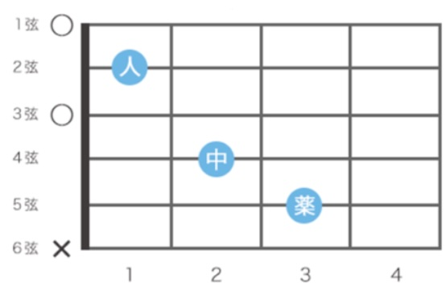
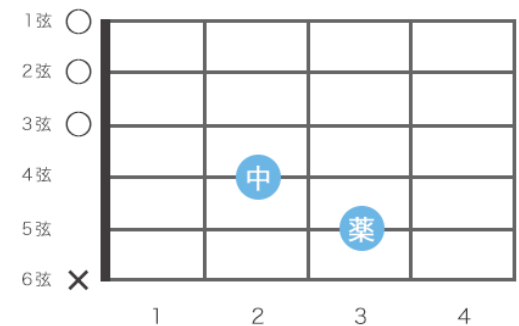
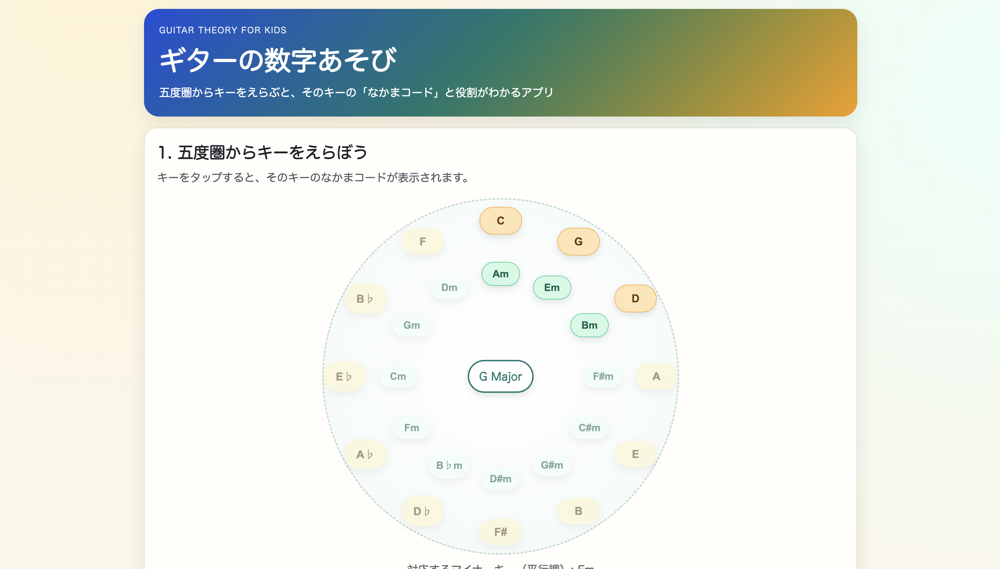
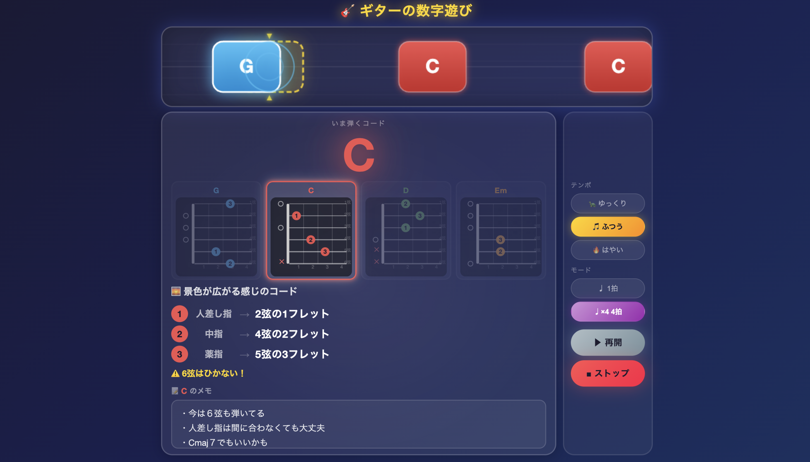

ギターをやってみて、
もっとうまくなりたい
と思っている小学生
最初は大丈夫でも、コードがだんだん雑になる...

「最初は、3本でしっかり!」

「しかし、うわ、間に合わなかった...」
焦ってしまい、たくさんのミスを...
練習しよう....
↓
しかし、教本で
練習するも
覚えられず....
習得に時間がかかる
練習効率が低い
「同じようなコードでも、毎回新しく覚えてしまっているんだ...」
構造(しくみ)を
理解する
音の関係を
知る

構造を可視化して、
初心者でも理解しやすい！
コードの押さえ方が曖昧だと、
応用で止まってしまう💦

学習手順を整理し、
実際の練習につなげる！
習得スピードが
上がる！
演奏のミスが
減る！
問題：効率が悪い
原因：理解不足
解決：コード理論
「理解」が成長を加速する！🎸